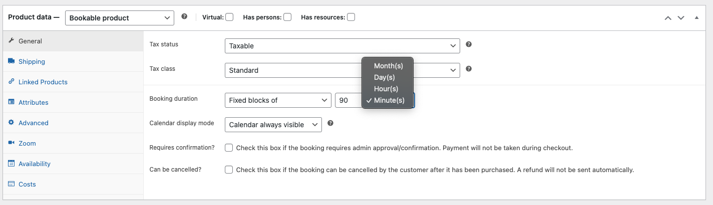
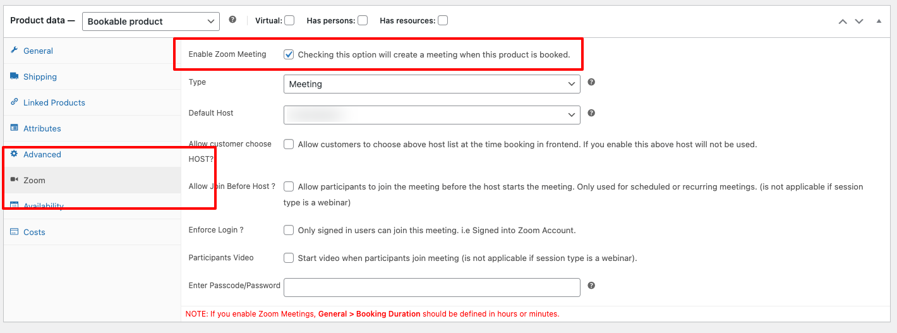

WooCommerce Bookings (Addon)
This Addon is for WooCommerce Booking Plugin which acts as an automation process in creating zoom meetings which is available here.
Prerequisite
- Free version of Video Conferencing with Zoom API
- WooCommerce Download Here
- WooCommerce Bookings Download Here
Introduction
Zoom Integration for WooCommerce Booking allows you to automate your zoom meetings directly from your WordPress dashboard by linking zoom meetings to your WooCommerce Booking products automatically when a Booking Product is created. Users will receive join links in their booking confirmation emails. Admin can directly start meetings from wp-admin > Bookings list page.
Demo Video of Implementation
Implementaion of the plugin video above.
How to link meetings/webinar to booking product?
- Goto wp-admin > Products > Add New
- Add your Booking title and Description.
- Select product data as "Bookable Product" and under general section > Booking Duration should be either hour(s) or minute(s). like in the below screenshot.
Note: You must either select hour(s) or minute(s) only otherwise the meeting/webinar won't be created.

- Select Zoom tab now - you should see a screen like shown in below screenshot. Check the "Enable Zoom Meeting" and select the type of your meeting you want it to be - for example: normal zoom meetings or webinars.

- Publish the post
Now, your users should be able to book from the frontend.
Features
Below are few features listed.
Create Automated zoom meetings without configurations
With this plugin, your zoom meetings are automated when a booking product is booked. A zoom meeting is created once a booking is booked from a customer side. It happens automatically without any configurations.

Manually Select which host to assign for the Booking
When you create a booking product, you'll be able to select which host to assign that booking product so that the host can manually start the meeting when a booking is booked.

Join links and start links in email as well as your frontend my-account section.
After a booking is done. Users will be able to join their bookings from email link. Zoom meeting will be included in the booking email as well as inside the users my-account > bookings frontend table section.

Product Vendors Support
Zoom for WooCommerce Bookings supports Product Vendors since version 2.1.7 . Each vendor can be assigned a Zoom User / Host ID. When the vendor creates a Booking Product the host is automatically selected based on which host they have been assigned.
Note: The host(s) need to be under the Zoom account that has been configured - this is a paid Zoom feature. Assign Zoom Host To assign Zoom Host to a Vendor. Goto Products > Zoom Vendors here you will be shown a screen of available vendors and ability to assign a host to them.

Once Zoom host is assigned to vendor. When the vendor in question when creates a Bookable Product - the selected Host will be used to create the Zoom Meeting.